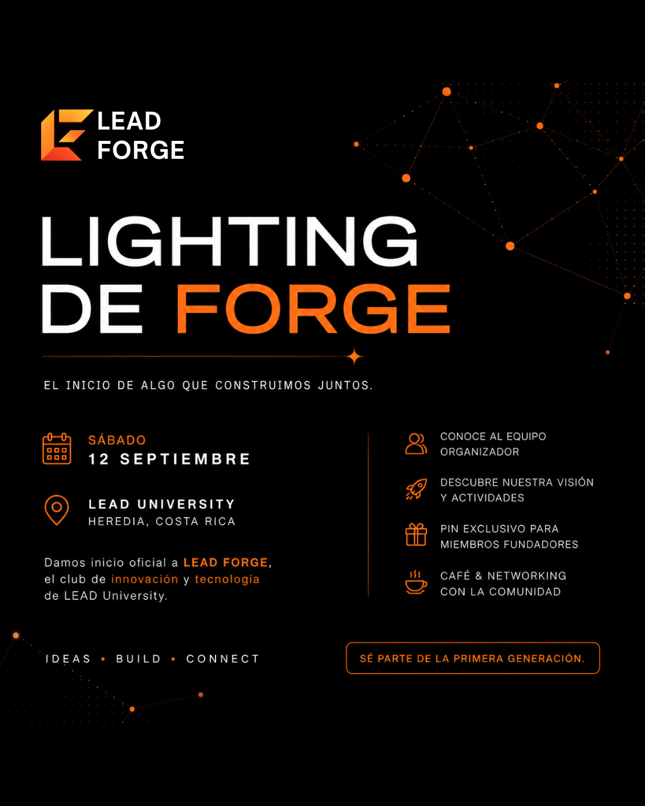
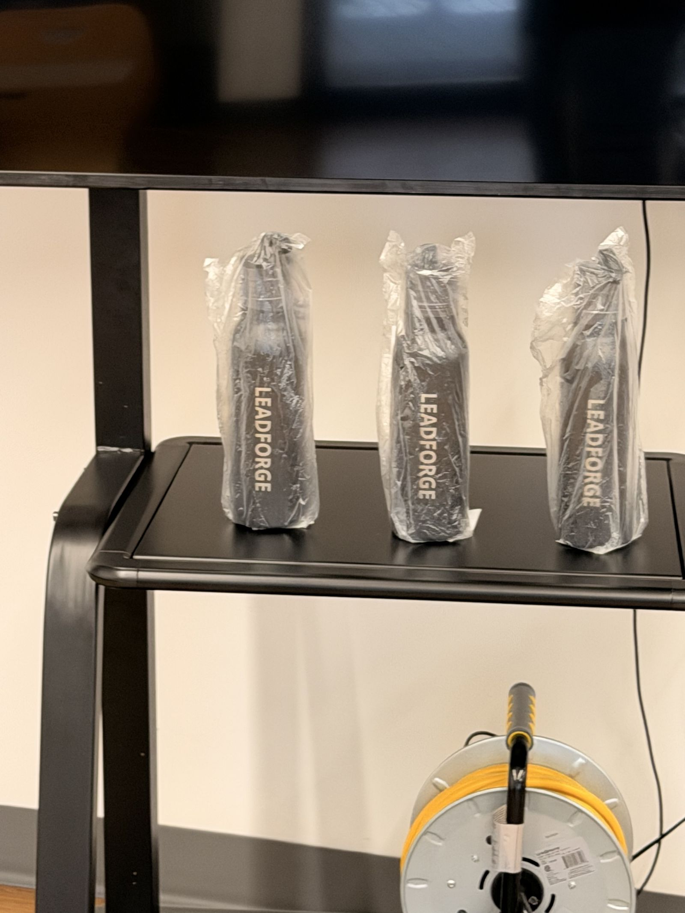
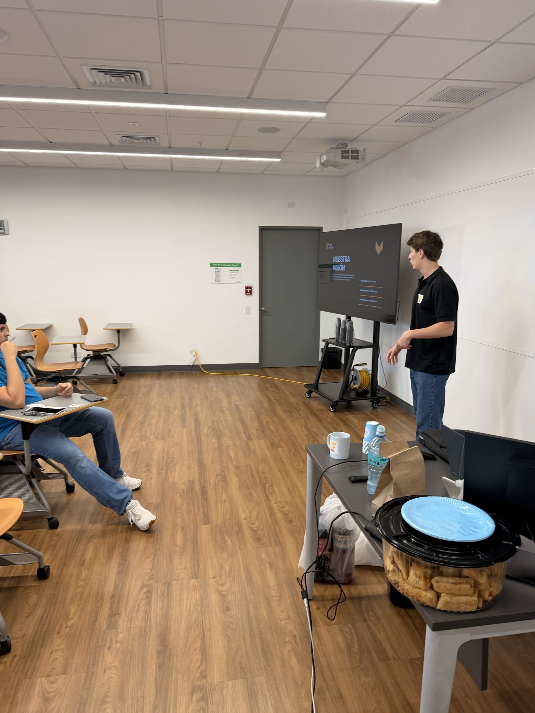
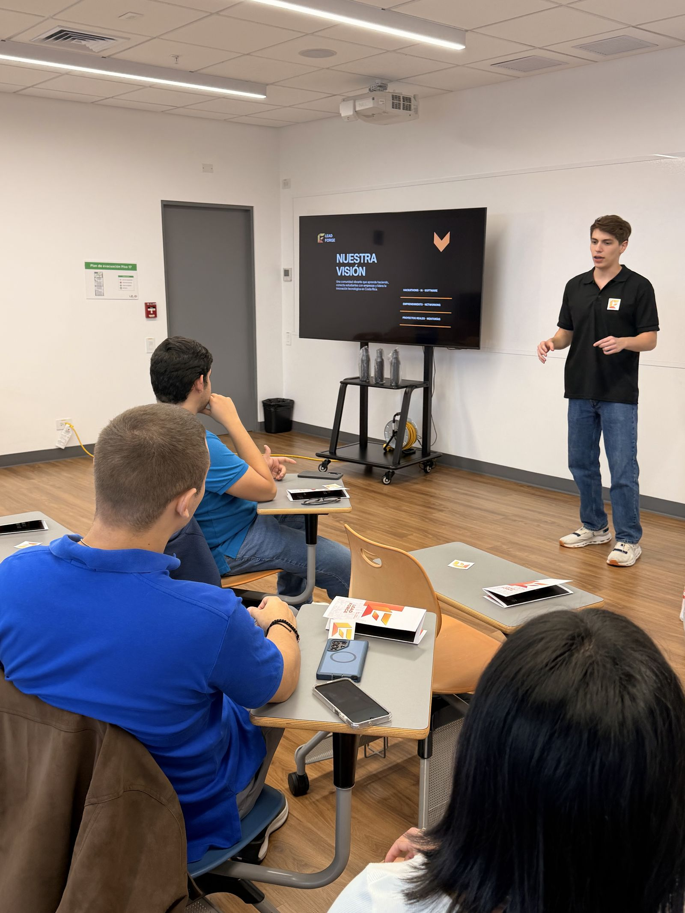
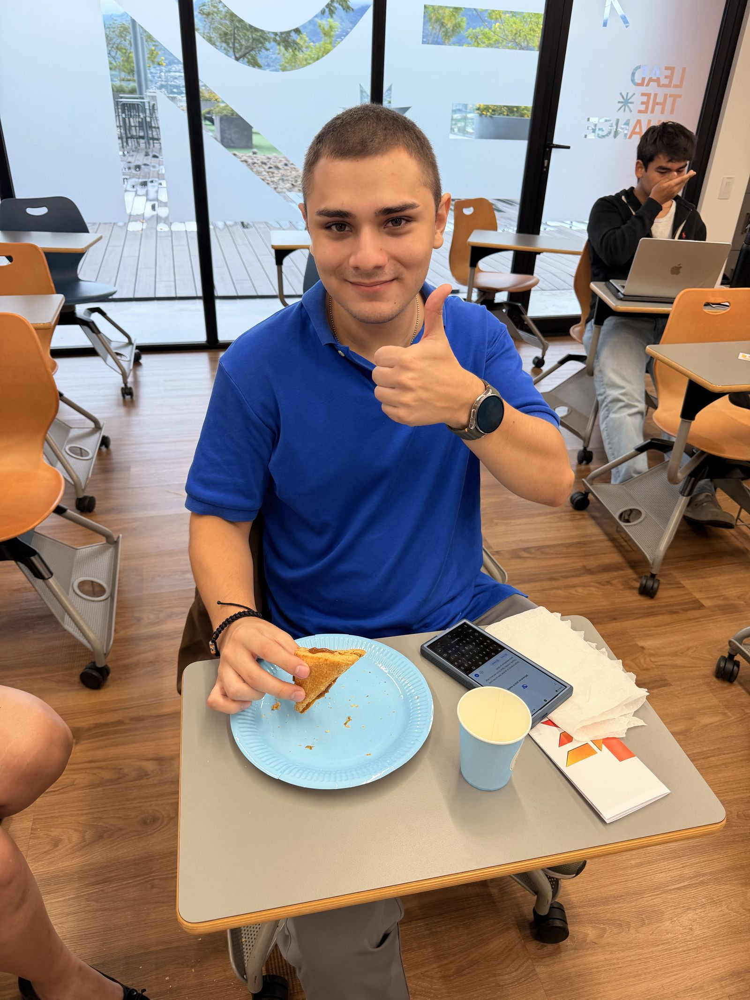
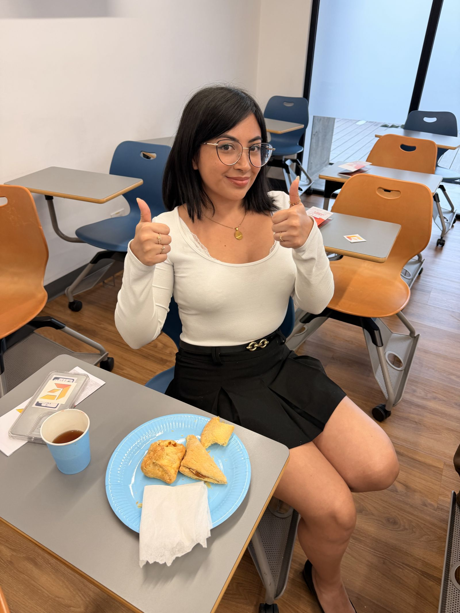
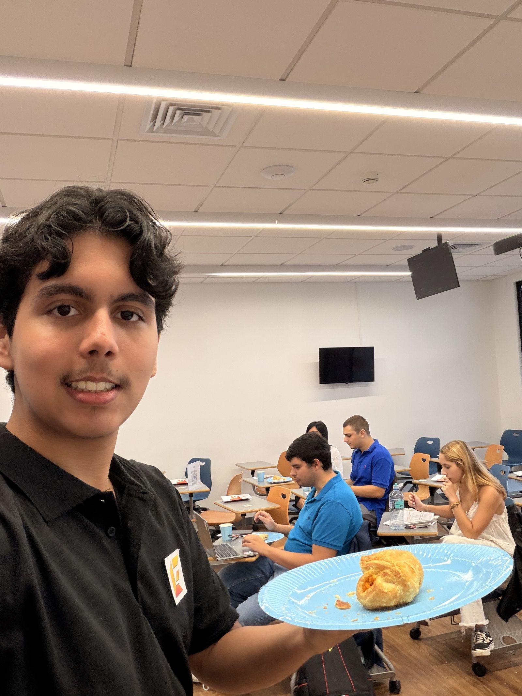
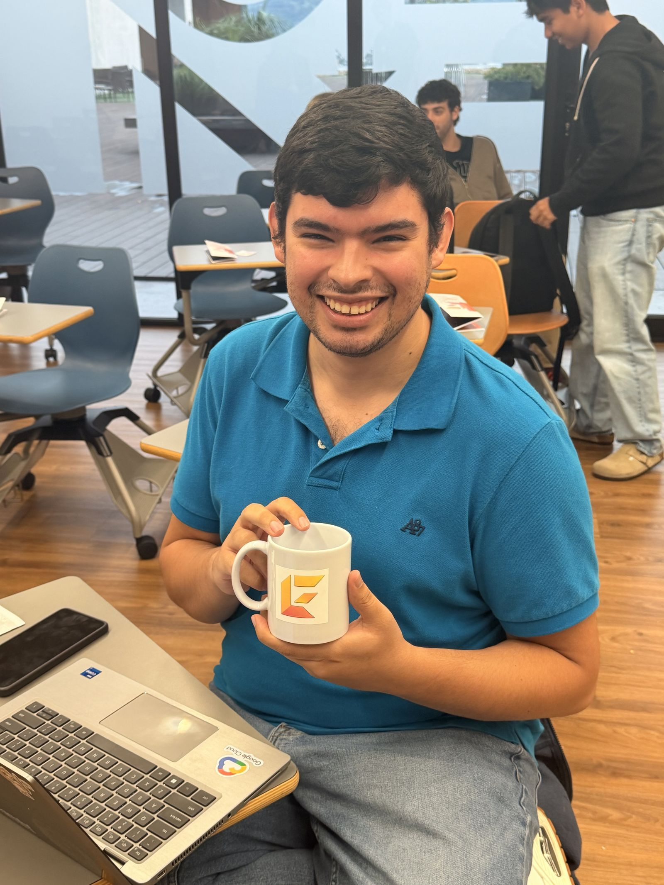
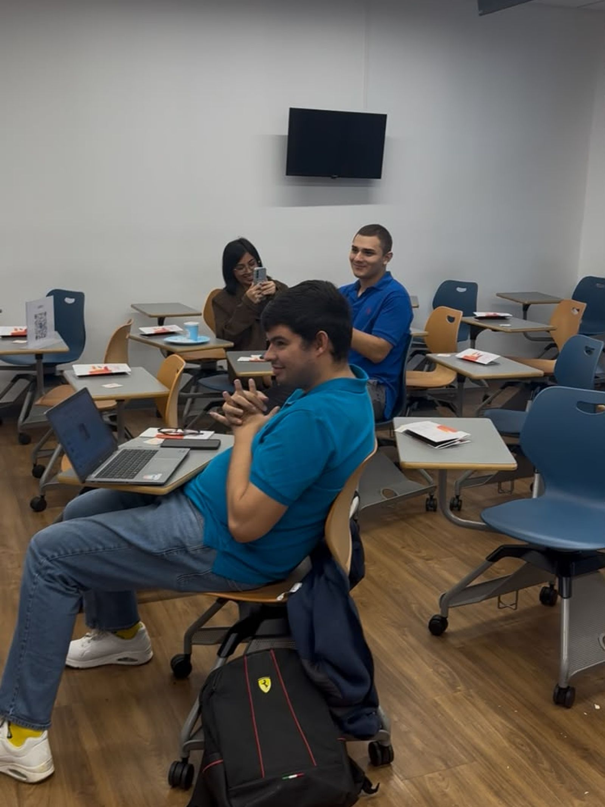

EVENTO · FINALIZADO · 12 SEP 2026
El arranque oficial del club ya quedó en el archivo. Este es su registro: cómo se vivió y las fotos del primer gran encuentro de LEAD Forge.

Dimos inicio oficial a la primera generación del club: presentamos a los miembros fundadores, compartimos la visión y el calendario del cuatrimestre y hablamos de nuestros patrocinadores, TrueDelights y LEAD University. Repartimos premios con el nombre del club: tres botellas y una taza como premio extra. Cerramos con café & networking para conocernos y empezar a construir.
// fotos.archivo · lighting_de_forge








// 8 fotos · 5 clips · cobertura oficial del arranque